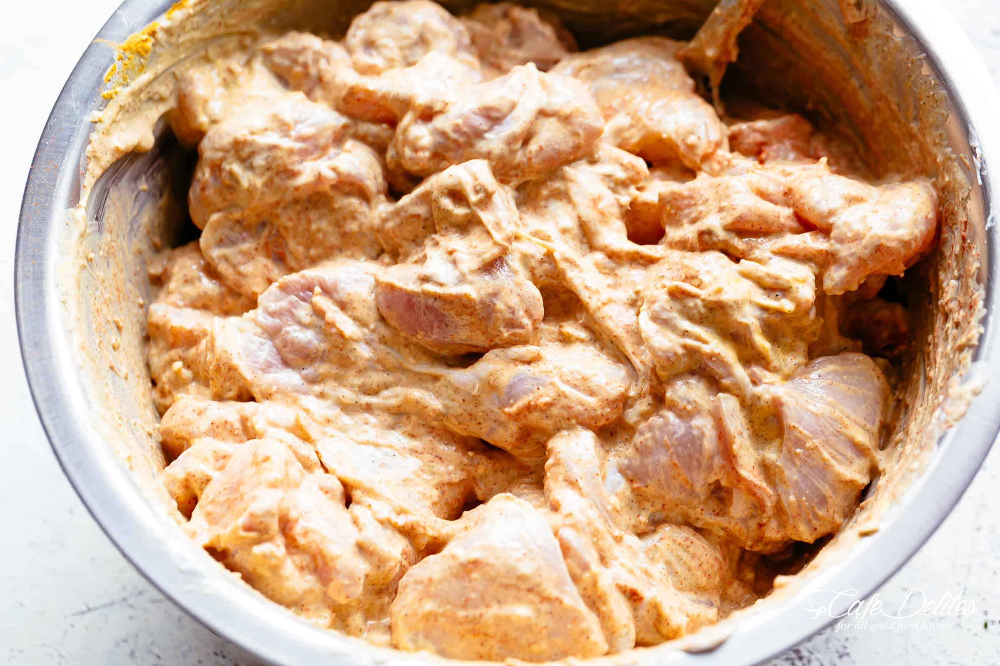

Traditionally, the chicken used for Indian recipes is cooked in a tandoori oven... However, we do not expect the average joe to be in posession of a tandoori oven, so this recipe calls for an average joe oven.
Please do not limit yourself. While this chicken is designed for Indian recipes, you are a multi-faceted and creative individual. Feel free to go wild with how you use this chicken. It is only a base and has so much potential, help it live up to it's delicious poultry dreams.